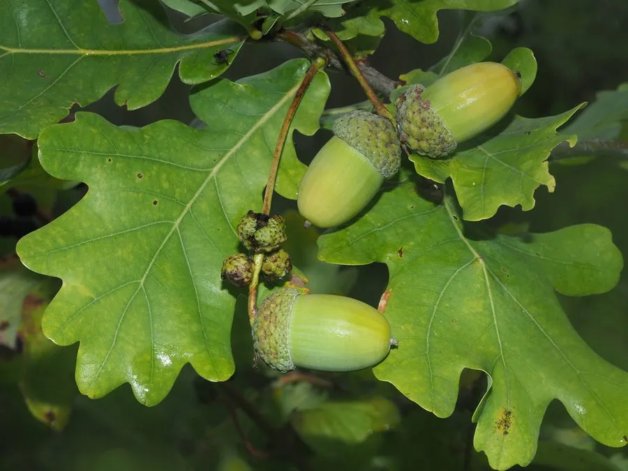

乔木 · 植物界
夏栎 Quercus robur

欧洲温带森林的代表性落叶乔木，树冠宽阔，木材坚硬耐腐，果实橡实是松鼠等动物的重要食物，寿命可达数百年。
- 分类
- 门被子植物门纲木兰纲目壳斗目科壳斗科属栎属
- 栖息环境
- 欧洲温带平原与丘陵的森林、草甸边缘，喜光耐寒
- 地理分布
- 欧洲大部分地区及西亚，中国北方有引种栽培
- 保护级别
- IUCN 无危（LC）；中国未列入国家重点保护野生植物名录
物种志
夏栎为落叶大乔木，高可达 40 m，树冠宽阔呈卵圆形，树干粗壮，树皮灰褐色、深纵裂；叶片倒卵形至长椭圆形，长 7–14 cm，边缘具 4–7 对圆钝的波状裂片，叶柄极短，近于无柄。雌雄同株，雄花序为下垂的葇荑花序，雌花单生或簇生于新枝叶腋；坚果即橡实，长 1.5–2.5 cm，基部包有杯状壳斗，成熟后变为褐色。
夏栎广泛分布于欧洲温带及西亚，是欧洲森林中最常见的栎树之一，喜光、耐寒，适宜深厚肥沃、排水良好的土壤，寿命可达 500–1000 年。木材坚硬致密、耐腐，是家具、地板与造船的优良材料；树皮可提取鞣料；橡实可喂猪或加工淀粉，但需去涩处理。夏栎在西方文化中象征力量与长寿，英国皇家海军曾大量使用夏栎木材造船。
形态与习性
- 株高可达 40 m，树冠宽阔
- 花期4–5 月，雄花序下垂
- 果期9–10 月，橡实成熟
- 光照喜光，不耐庇荫
- 水分喜湿润，可耐短期水湿
- 土壤深厚肥沃、排水良好的壤土
- 寿命可达 500–1000 年
- 主要用途家具与造船用材、树皮提取鞣料、橡实作饲料
趣味知识
- 夏栎的橡实是松鼠、松鸦等动物秋天储藏的食物，也是森林更新的重要途径。
- 夏栎叶片几乎无柄，裂片圆钝，与叶裂尖锐的冬青栎容易区分。
- 英国皇家海军曾大量使用夏栎木材建造战舰，因此夏栎又有“海军栎”之称。
- 夏栎寿命可达千年，欧洲许多村庄的古栎树被列为自然纪念物。